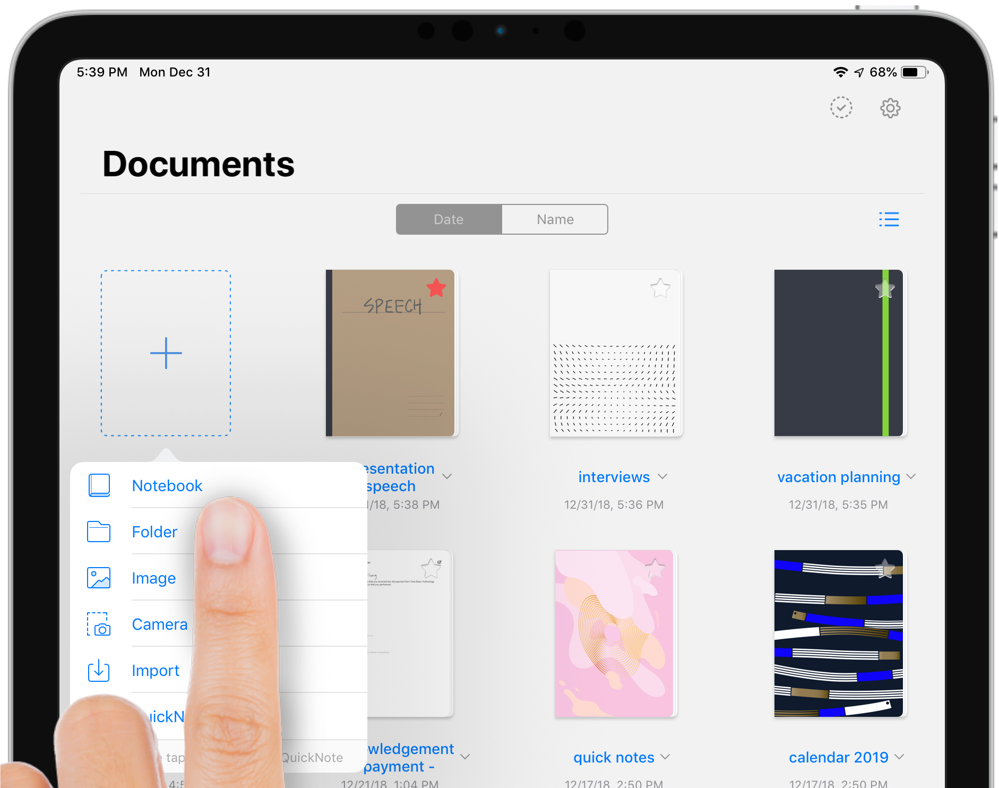

GoodNotes is a note-taking app that lets you take handwritten notes in digital notebooks and annotate imported PDF documents. The app aims to help you lead a paperless life. All your notes and documents are neatly organized in GoodNotes so that you won't ever lose anything again. Messy desks, paper jams in printers, waiting in line in front of the copier, carrying around heavy backpacks - all these things can be avoided by using GoodNotes.
The central elements to organizing information in GoodNotes are notebooks and (external) documents. Digital notebooks are much like paper ones, with individual pages and a cover. Yet, unlike with a paper notebook, GoodNotes allows you to create an unlimited number of notebooks with infinite pages. You can add all sorts of information to a single page and create rich, multimedia notes: handwriting, typed text, images, sketches, photos, screenshots, and more.
In the Documents tab, tap the large + button (the "New..." button) > Notebook.
You can select a paper template from our large template library and change the notebook cover. To switch between paper and cover selection, just tap on the default preview in the upper left and make your choice by tapping on one of the options presented below.
The cover is the first page by design and will help you to distinguish a notebook from others in the library. Add a title to your new notebook by typing in the designated title field and tap Create in the upper right. Congrats! You've just created your first notebook! Now you can start taking notes in it.
Taking notes in your first notebook is super simple, just like writing with a pen on paper.
When you open a document, you'll see two bars at the top of the screen.
The upper one in dark color is the nav bar, which, as indicated by its name, lets you perform navigation actions or those that affect the document as a whole, like exporting or renaming it. You also notice Read-Only Mode is located on the nav bar.
The lower one is the toolbar. You can select a tool or color by tapping on it once. The selected tool will be represented in color, whereas inactive tools are colorless. Tapping the selected tool a second time will reveal additional settings of that tool.
There are multiple ways of importing files into GoodNotes. Supported are: PDF, Word, PowerPoint, and GoodNotes documents.
The most common method is to tap on the New... (+) button and choose Import. The Files interface will show up and you can select a document to import by tapping on it.
Sharing a document or just a single page is something we do on a day-to-day basis. Sharing a page with a co-worker via email, or uploading multiple documents to a shared cloud storage folder - being able to do such things without having to scan, upload, and then trash paper pages saves a lot of valuable time and resources. There are multiple ways to do it in GoodNotes, but it all boils down to the following basic steps:
1. Select the document(s) or page(s) to export.
2. Initiate the Export command.
3. Choose a location for the exported file(s).